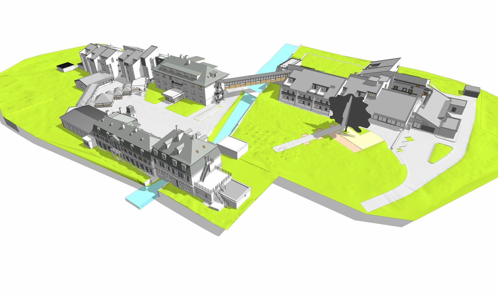

05 / SITE MIXTE
Patrimoine & extensions contemporaines
Modèle BIM complet d'un site mixte intégrant un bâtiment historique restauré et plusieurs extensions modernes. Restitution scan-to-BIM des toitures à la Mansart, lucarnes, alignement des baies, complétée par la modélisation des extensions, passerelles et parc paysager.